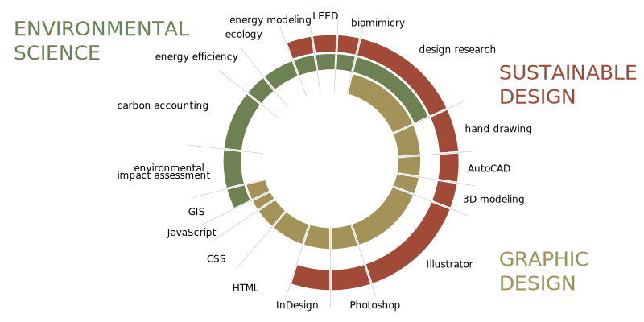

Skills

Experience
March 2013 - Present
Technical Associate
- Designing and administering behavior change programs using an empathetic approach
- Coordinating events around community engagement and environmental education
- Using research and design to transform complex data and systems into accessible visual stories
- Providing technical assistance to projects through preliminary research, data analysis, and design
August 2012 - December 2012
Teaching Assistant
School of Architecture, University of Texas, Austin, TX
- Developed and led lab activities pertaining to lighting, electrical, and acoustic design
- Evaluated student work
May 2012 - July 2012
Public Interest Design Extern
School of Architecture, University of Texas, Austin, TX
- Measured the social, economic, and environmental impacts of a public project
- Conducted interviews and administered surveys, analyzed data, developed infographics, and produced two reports (academic & professional)
February 2012 - October 2012
Climate Action Planning Intern
Office of Sustainability, University of Texas, Austin, TX
- Coordinated the university-wide greenhouse gas inventory
August 2011 - July 2012
LEED Projects Intern
US Green Building Council Central Texas-Balcones Chapter, Austin, TX
- Drove the regionalization process to define the new Regional Priority Credits for LEEDv4
May 2011 - August 2011
Intern
Chicago Center for Green Technology, City of Chicago, Chicago, IL
- Assisted with LEED Existing Building Operations + Maintenance Platinum Certification
- Developed graphics for educational displays
Education
August 2011 - May 2014
Master of Science in Sustainable Design
University of Texas, Austin, TX
August 2007 - May 2011
Bachelor of Arts in Architecture & Environmental Science
Miami University, Oxford, OH
Training
August 2015 - November 2015
Front-End Web Development
General Assembly, Chicago, IL
- Reimagined a greener and healthier campus for Chicago Public Schools
- Coordinated a large scale art installation including student participation
October 2014 - June 2015
Sustainable Urban Design Certificate Program
Archeworks, Chicago, IL
- Reimagined a greener and healthier campus for Chicago Public Schools
- Coordinated a large scale art installation including student participation